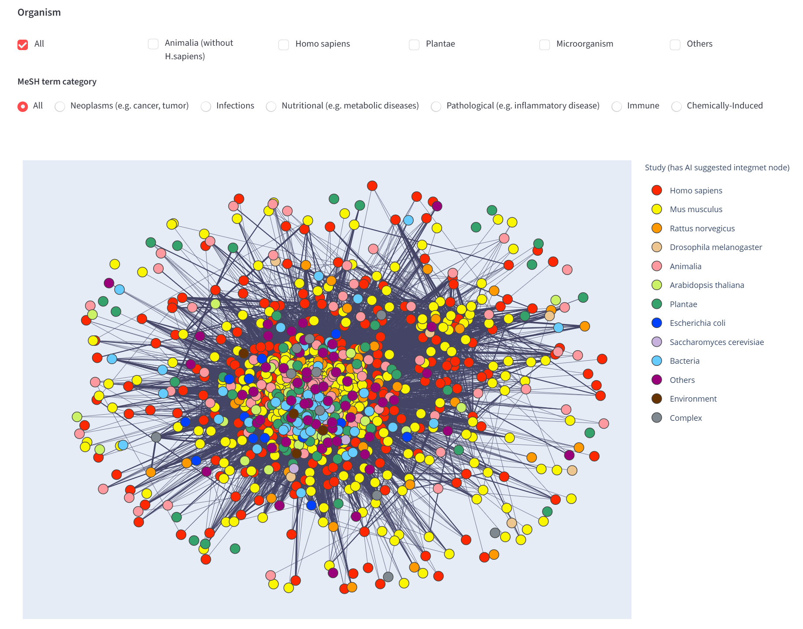
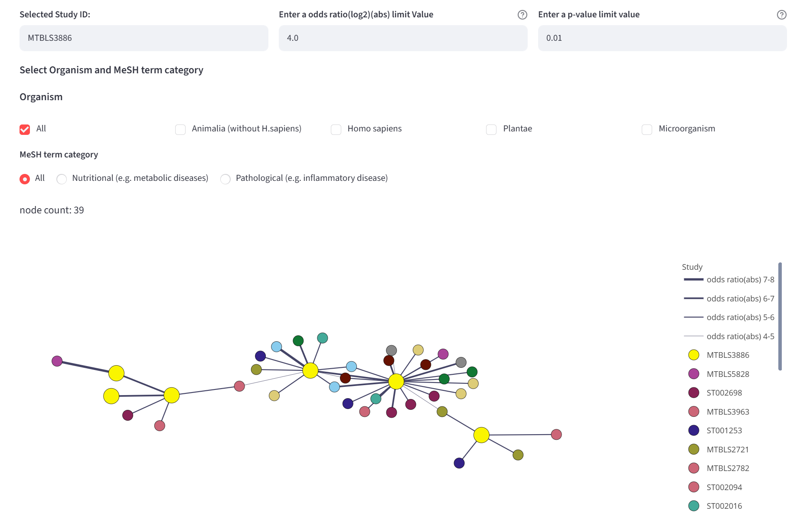
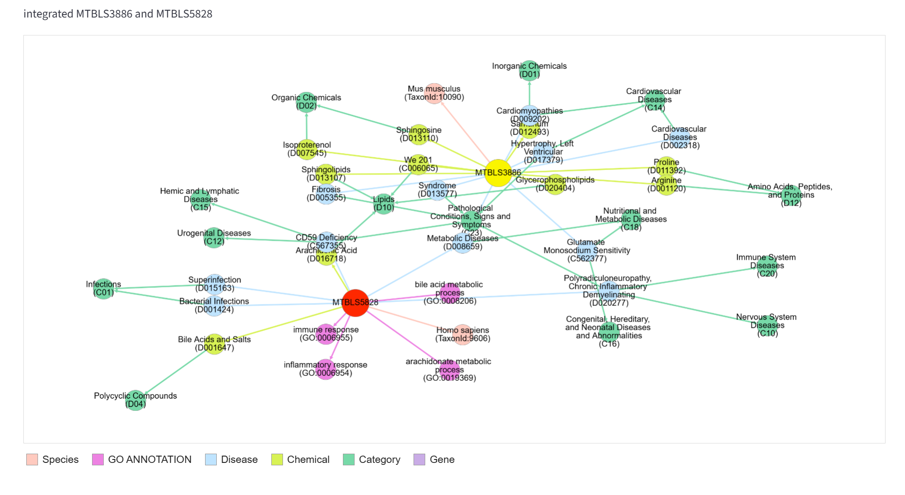

Network Visualization
integMET provides an interactive network visualization for exploring relationships between biological studies and Differential Profiles, hereafter referred to as DiffProfs.
A DiffProf represents a biological contrast, such as disease versus control, treatment versus untreated, or stress condition versus baseline, together with its associated metabolite changes.
The main workflow starts from a Study-level network. Users first select a Study of interest, and then explore the DiffProf network connected to that Study.
Concept
When two biological conditions cause similar metabolite changes, their DiffProfs may be biologically related — even if they come from different studies, species, or experimental contexts.
integMET visualizes these relationships as a network so that users can discover related Studies and DiffProfs based on shared metabolite-change patterns.
The visualization is designed for exploratory analysis and hypothesis generation. It helps users move from a Study of interest to related DiffProfs, compare biological contexts, and inspect metadata that may explain why certain profiles are connected.
Workflow Overview
The basic workflow is:
- Select a Study from the Study-level network
- Display the DiffProf network related to the selected Study
- Adjust threshold settings if needed
- Select one or two DiffProf nodes
- Compare the corresponding Study information
- Inspect the integrated Metadata Network
Study-Level Network

The first network provides an overview of Studies associated by integMET.
To build this Study-level network, integMET uses representative DiffProfs extracted from each Study. DiffProfs with high importance are selected using a Large Language Model (LLM), and relationships among those selected DiffProfs are used to construct the Study-level graph.
Each node represents a Study or Study-level entry. This network helps users find a Study of interest before moving into the more detailed DiffProf-level network.
Filters
Users can filter the Study-level network by organism and MeSH term category.
Organism
Available organism categories include:
- All
- Animalia, excluding Homo sapiens
- Homo sapiens
- Plantae
- Microorganism
- Others
MeSH Term Category
Available MeSH term categories include:
- All
- Neoplasms
- Infections
- Nutritional or metabolic diseases
- Pathological or inflammatory conditions
- Immune-related conditions
- Chemically induced conditions
These filters are useful for narrowing the network to specific biological contexts, such as cancer, infection, metabolic disease, immune response, or chemically induced conditions.
Selecting a Study
To begin detailed exploration, click a node in the Study-level network.
After a Study node is selected, its Study ID appears in the Selected Study ID field. The selected Study is then used as the starting point for generating the related DiffProf network.
DiffProf Network

After selecting a Study, integMET displays a DiffProf-level network associated with that Study.
In this network:
- Each node represents a DiffProf
- Each edge represents a relationship between two DiffProfs based on similar metabolite-change patterns
- Connected nodes indicate DiffProfs that share statistically supported metabolic similarity
This network allows users to identify DiffProfs that are metabolically similar to those in the selected Study.
How the DiffProf Network Works
Nodes
Each node represents a DiffProf.
A DiffProf corresponds to a biological comparison and may include information such as:
- DiffProf ID
- Study ID
- Experimental factor information
- Biological group
- Organism or metadata category
When a node is selected, the application displays its node properties, including the node ID, factor information, and group classification.
Edges
An edge connects two DiffProfs when they show similar metabolite-change patterns.
The relationship is based on:
- The same metabolites changing in both DiffProfs
- Strength of association between the two DiffProfs
- Statistical significance of the relationship
Edges are shown only when they satisfy the selected threshold settings.
Threshold Settings
The DiffProf network can be adjusted using two threshold parameters.
Odds Ratio Log2 Absolute Value
This parameter controls the strength of the displayed relationships.
The network data included in integMET are based on relationships satisfying abs(log2 odds ratio) >= 4.0. The default display setting also uses this value.
A higher value makes the network stricter and displays only stronger relationships. Setting a value below 4.0 does not add relationships outside the collected data range.
p-value
This parameter controls the statistical significance threshold.
The network data included in integMET are based on relationships satisfying p-value <= 0.1. The default display setting is p-value <= 0.01.
A smaller p-value threshold makes the network stricter and displays only more statistically significant relationships. Increasing the p-value threshold can display additional relationships already included in the stored data, up to p-value <= 0.1.
Exploring DiffProf Nodes
Users can click nodes in the DiffProf network to inspect individual DiffProfs.
The application keeps the two most recently selected nodes, allowing users to compare two DiffProfs side by side.
To reset the selected nodes, click:
clear selected node IDs
Comparing Two DiffProfs
When two DiffProf nodes are selected, integMET displays information about the corresponding Studies.
The comparison view may include:
- Selected node IDs
- Node properties
- Study titles
- Project factors
- Study summaries
- Biological categories
- Observations
- Findings
- Links to external Study information when available
This view helps users interpret why two DiffProfs are connected in the network.
Metadata Network

After two valid Study IDs are selected, integMET displays an integrated Metadata Network.
The Metadata Network shows metadata associated with the selected Studies, such as:
- Species
- Disease terms
- Chemical terms
- MeSH categories
- GO terms
- Gene-related information
This network provides contextual information for interpreting relationships observed in the DiffProf network.
Reading the Metadata Network
In the Metadata Network:
- Study nodes represent the selected Studies
- Metadata nodes represent biological annotations associated with those Studies
- Edges represent relationships between Studies and metadata terms
- Node colors indicate metadata classes such as Species, Disease, Chemical, Category, Gene, or GO term
Annotation notes:
- Disease, Chemical, and Gene annotations are generated using PubTator3
- GO term annotations are assigned using OntoGPT
Users can use this network to check whether the selected Studies have shared or related metadata.
Use Cases
Finding Similar Biological Conditions
Users can identify DiffProfs that have metabolic signatures similar to those in a selected Study.
This is useful for finding biological conditions that may share common metabolic responses.
Discovering Cross-Study Relationships
The network can reveal relationships between Studies that were not originally designed to be compared.
For example, a disease Study, drug treatment Study, model organism Study, or environmental stress Study may be connected through similar metabolite-change patterns.
Exploring Cross-Species Similarity
Because relationships are based on metabolite-change patterns, the network may reveal similarities across different organism groups.
This can help users investigate conserved metabolic responses across species.
Generating Hypotheses and Selecting Candidates
Unexpected connections or clusters of related DiffProfs can suggest new biological hypotheses.
They can also help users select candidate Studies or contrasts for deeper investigation, manual curation, or meta-analysis.
Recommended Operation
A recommended way to use the visualization is:
- Start from the Study-level network
- Apply Organism or MeSH category filters if needed
- Click a Study node of interest
- Confirm that the selected Study ID appears in the Selected Study ID field
- Inspect the DiffProf network generated from the selected Study
- Adjust the odds ratio and p-value thresholds to control network density
- Click a DiffProf node to inspect its properties
- Click a second DiffProf node to compare two related DiffProfs
- Review the side-by-side Study information
- Inspect the Metadata Network to check shared or related annotations
- Follow external database links if more detailed Study information is needed
Observed relationships should be treated as hypotheses for further validation, not as direct proof of a shared mechanism.
Limitations
- Similarity is based on detected metabolites; undetected metabolites are not compared
- Different analytical platforms may detect different metabolite subsets
- Study metadata depends on the available annotations
- Missing or incomplete metadata may affect interpretation
- Strong network connections suggest similarity but do not prove mechanistic relationships
- The displayed network depends on the selected odds ratio and p-value thresholds
Summary
The integMET network visualization allows users to start from a Study of interest and explore related DiffProfs based on shared metabolite-change patterns.
By linking DiffProf similarity with Study metadata and integrated metadata visualization, integMET supports cross-study discovery, biological interpretation, and hypothesis generation.